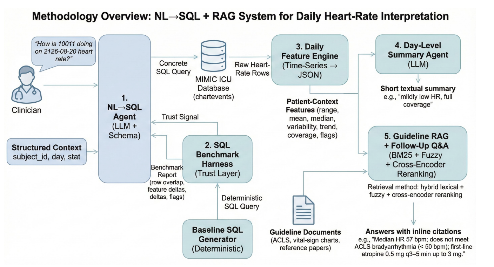
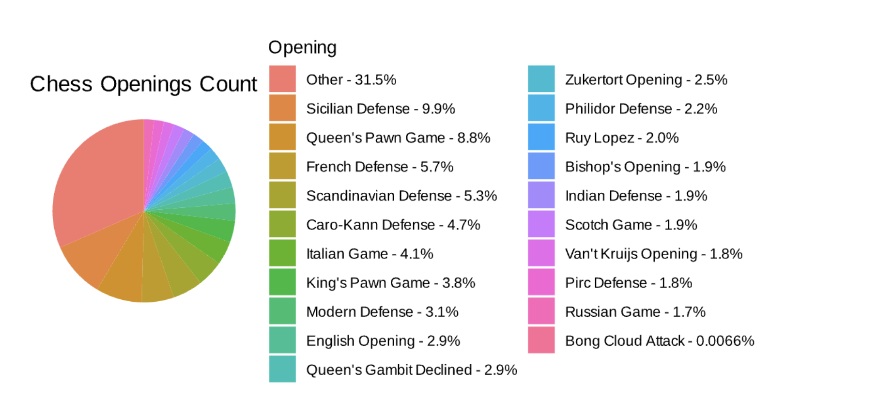

Technical Projects
A selection of projects spanning AI/ML, data infrastructure, IoT, and research.
🛠 Discovery Project (ECE 1100)
Currently in progress — details will be added before the Discovery Project Showcase deadline.
🏥 Bio-MIBLab — Natural-Language ICU Heart-Rate Interpretation (Fall 2025)

Undergraduate research at Georgia Tech & Emory School of Medicine under PI Dr. May Wang. Built an end-to-end clinical Q&A system that answers natural-language questions about ICU patients — e.g., "How is patient 10011 doing today?" — by combining three components: a natural-language–to–SQL (NL→SQL) agent over MIMIC-III ICU data, a daily feature engine that summarizes heart-rate time series into clinically meaningful statistics, and a retrieval-augmented generation (RAG) layer grounded in ACLS guidelines and medical literature.
A key challenge was trust: LLMs can silently generate plausible-looking but incorrect SQL. To address this, I built a SQL benchmark harness that compares the agent's queries against a deterministic baseline, evaluating row-level recall and precision, per-metric deltas, and data quality flags. On a representative case (subject 10011), the system correctly retrieved 27 heart-rate rows, computed a full daily feature profile (mean ≈ 59.5 bpm, median 57 bpm, gentle downward trend), and answered follow-up clinical questions with explicit citations to ACLS bradycardia algorithms.
💬 Research Presentations at ENDO 2025

First Author — Diabetes Risks: Led all technical development. Built custom healthcare chatbot pipelines using top LLMs combined with RAG. Benchmarked results using BERTScore, ROUGE, and BLEU metrics to evaluate factual accuracy and clinical relevance.
Co-Author — Thyroid Eye Disease: Evaluated LLM accuracy on clinical queries. Collaborated with a 10-member interdisciplinary team spanning medicine and computer science.
🤖 Open-Sourced AI-Powered Multi-Agent Debate & Learning Platform
A multi-agent debate platform built with LLMs and the Langroid framework in Python. The system simulates structured debates between users and AI agents on AI ethics topics. Each agent is prompt-engineered and role-tuned, with support for OpenAI, Google, and Mistral models. The platform integrates neural search for real-time web references and includes a dedicated feedback and evaluation agent.
This project was contributed to open source and is now part of the official Langroid framework under the MIT license. It was featured on the Langroid Blog and highlighted by contributors on LinkedIn.
🩹 Factually Consistent AFib Q&A using LLMs
A medical chatbot designed for AFib (atrial fibrillation) patients and medical students, grounded in Stanford Healthcare and American Heart Association sources. Uses document parsing, relevance extraction, and vectorization (Qdrant DB) for accurate, factually consistent responses. Supports GPT-4 and Gemini models. Built with Langroid and Python to bridge complex medical information and accessible user-facing insights.
🎥 Apple Apprenticeship — AI-Powered Dorm Room Security System (Summer 2024)
Built with a team of 3 during Apple's Engineering Camp II. The system detects guns, rifles, and fire in real time using YOLOv5 computer vision. Hardware includes a Raspberry Pi Zero 2 W, Camera Module 3, and SparkFun ENS160/BME280 environmental sensors.
The YOLOv5 model was trained on 15,700 images using AWS EC2, PyTorch, and a CSPDarknet53 + PANet architecture. A companion iOS app (Swift) provides live video streaming, playback, environmental data monitoring, and hazard notifications. The project was presented to multiple Apple SVPs.
🚗 Tire-Road Coefficient of Friction Analysis
Measured friction coefficients for a 2004 Lexus GX470 using OBD-II deceleration data. Python scripts calculate real-time acceleration from vehicle speed data and perform statistical analysis. Results: μ = 0.0465 (neutral coasting) and μ = 0.485 (braking), consistent with expected values for rubber-on-asphalt contact.
🧠 Multivariable Calculus & Linear Algebra Applications in ML
Built and trained a convolutional neural network from scratch in Python to classify handwritten digits. The project emphasizes the mathematical foundations of machine learning — specifically how multivariable calculus (gradient descent, backpropagation) and linear algebra (matrix operations, transformations) underpin neural network training. Demonstrated mathematical optimization techniques that measurably improved network performance.
📑 Linear Algebra Library (PyLAP)
A comprehensive Python linear algebra library built entirely from scratch without NumPy. Designed for educational purposes, PyLAP demonstrates the inner workings of linear algebra computations — from basic matrix operations to eigenvalue decomposition. Accompanied by a written paper explaining the mathematical theory and implementation decisions.
🌍 Apple Apprenticeship — CO2 Odometer (Summer 2023)
An OBD-II port integration that measures live vehicle carbon emissions in real time. Built with a team of 5 during Apple's Engineering Technology Camp. The companion iOS app displays real-time and lifetime emission data, gamified to encourage eco-friendly driving habits. Presented to Apple executive leadership.
📊 Large-Scale Online Chess Game Data Infrastructure & Analytics

An ETL pipeline in Python that processes over 100 million online chess games. Data is stored in TiDB (a distributed SQL database) with AWS S3 for object storage and EC2 for compute. Statistical analysis performed in R identifies player performance patterns, rating trends, and game outcome correlations across massive datasets.
📚 Calculus Educational Chatbot
A calculus tutoring chatbot built in Python using LangChain and GPT-3.5. The bot responds to student prompts grounded in targeted calculus documents, ensuring accurate and relevant answers. The user interface was built with Gradio, providing an accessible and interactive experience for students learning calculus concepts.